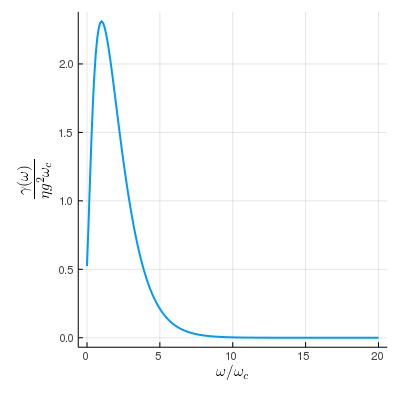
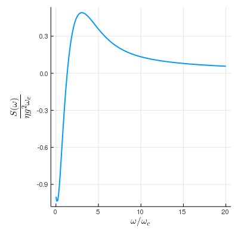

Bath
We start with a general form of the system-bath interaction Hamiltonian
\[ H_{SB} = \sum_\alpha S_\alpha\otimes B_\alpha\]
and define each $B_\alpha$ (together with the bath Hamiltonian $H_B$) as an AbstractBath object. An important property of any bath is its two-point correlation function
\[ C(t_1, t_2) = \langle \mathcal{B}(t_1) \mathcal{B}(t_2) \rangle\]
where
\[ \mathcal{B}(t) = U_B^\dagger (t) B U_B(t)\]
and $U_B(t)$ is the unitary generated by the pure bath Hamiltonian
\[ U_B(t) = \mathcal{T}\exp\Big\{ -i\int_0^t H_B \mathrm{d}\tau \Big\}\]
The spectral density of the bath is defined as the Fourier transform of the two-point correlation function and is denoted as $\gamma(\omega)$ in OpenQuantumTools. It is important to note that only for a Gaussian bath (whose higher order correlations satisfy Wick's Theorem) does the two-point correlation function uniquely determine the bath. Otherwise, high-order correlation functions are necessary. Nevertheless, we only deal with the two-point correlation function in OpenQuantumTools.
Currently, there are two built-in concrete types of the AbstractBath class – OhmicBath and HybridOhmicBath.
Ohmic Bath
A self-consistent reference for the Ohmic bath is [1] Quantum adiabatic markovian master equations. Users can use Ohmic function to construct OhmicBath object:
η = 1e-4; fc=4; T=16
bath = Ohmic(η, fc, T);The correlation and spectral density of the bath object can be calculated via
correlation(τ, bath)
spectrum(ω, bath)This interface is true for every concrete type of AbstractBath. However, plotting works differently for different bath models. For OhmicBath, the user can use
ω = range(0, 20, length=200)
plot(bath, :γ, ω)
plot(bath, :S, ω)to conveniently plot the spectral density and the $S$ function in the Lamb shift terms.
 
Hybrid Ohmic Bath
Details of the hybrid ohmic bath model are discussed in [2] Probing high-frequency noise with macroscopic resonant tunneling and [3] Theory of open quantum dynamics with hybrid noise. The core idea is to assume the noise spectrum can be split into low-frequency and high-frequency parts
\[ \gamma(\omega) = \gamma_L(ω) + \gamma_H(ω)\]
The high-frequency spectrum $\gamma_H(ω)$ comes from the Ohmic bath and the low frequency spectrum $\gamma_L(ω)$ can be interpreted as an approximation of $1/f$ noise. A benefit of this formalism is that instead of the entire spectral density, $\gamma_L(\omega)$ can be parametrized by a single parameter in a macroscopic resonant tunneling (MRT) experiment. To construct a HybridOhmicBath object, run the following command:
η = 1e-4; fc=4; T=16; W=10
bath = HybridOhmic(W, η, fc, T)Spin-fluctuator
The spin-fluctuator model is a classical noise model for 1/f noise often found in superconducting qubits [4] 1/f noise: Implications for solid-state quantum information. It is a stochastic process generated by summing telegraph processes
\[\sum_{i=1}^{K} n_i(t) \ ,\]
where $n_i(s)$ is the telegraph process that switches randomly between $\pm b_i$ with a rate $\gamma_i$ and $K$ is the total number of fluctuators. Such a noise model can be constructed using EnsembleFluctuator:
bvec = 0.2 * ones(10)
γvec = log_uniform(0.01, 1, 10)
fluctuator_ensemble = EnsembleFluctuator(bvec, γvec)The above code block defines a 10-fluctuator ensemble whose $b_i=0.2$ and $\gamma_i$s are log-uniformly distributed within $[0.01, 1]$. More details about simulating stochastic Schrödinger with spin-fluctuator noise can be found in this tutorial.